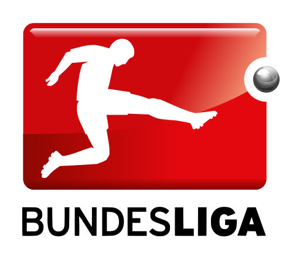

BUNDESLIGA

The Fußball-Bundesliga [ˈfuːsbal ˈbʊndəsˌliːɡa] (English: Football Federal League), commonly known as the Bundesliga, is a professional association football league in Germany and the most visited football league worldwide. At the top of the German football league system, the Bundesliga is Germany's primary football competition. The Bundesliga is contested by 18 teams and operates on a system of promotion and relegation with the 2. Bundesliga. Seasons run from August to May. Most games are played on Saturdays and Sundays, with a few games played during weekdays. All of the Bundesliga clubs qualify for the DFB-Pokal. The winner of the Bundesliga qualifies for the DFL-Supercup. A total of 52 clubs have competed in the Bundesliga since its founding. FC Bayern Munich has won the Bundesliga the most, winning the title 23 times. However, the Bundesliga has seen other champions with Borussia Dortmund, Hamburger SV, Werder Bremen, Borussia Mönchengladbach and VfB Stuttgart most prominent among them. The Bundesliga is one of the top national leagues, currently ranked 3rd in Europe according to UEFA's league coefficient ranking, based on recent European performances. The Bundesliga is the number one football league in the world in terms of average attendance; out of all sports, its average of 45,134 fans per game during the 2011–12 season was the second highest of any sports league in the world. The Bundesliga is broadcast on television in over 200 countries. The Bundesliga was founded in 1962 in Dortmund and the first season started in 1963. The structure and organisation of the Bundesliga along with Germany's other football leagues have undergone frequent changes right up to the present day. The Bundesliga was originally founded by the Deutscher Fußball-Bund (English: German Football Association), but is now operated by the Deutsche Fußball Liga (English: German Football League).